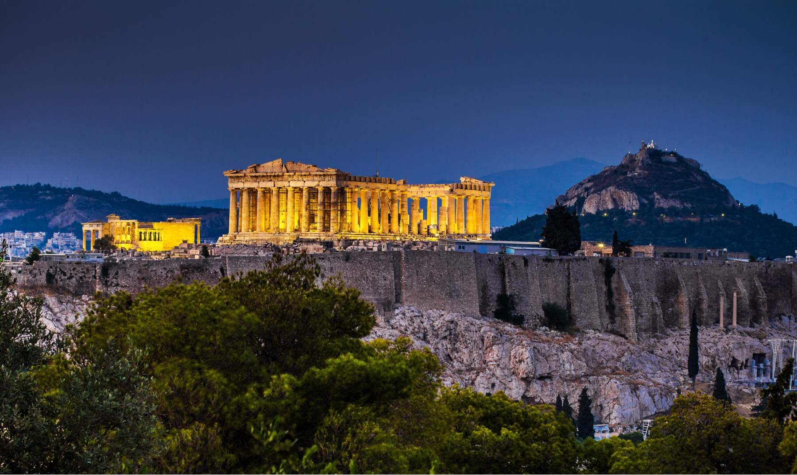

LITERATURA BARROCA

LITERATURA BARROCA

(1651-1695) fue una poeta, escritora y defensora de los derechos de la mujer en el México colonial. Nacida en San Miguel Nepantla, México, Sor Juana recibió una estricta educación en el hogar y fue considerada una de las intelectuales más distinguidas de su tiempo. A pesar de la oposición de la iglesia y la sociedad, Sor Juana siguió escribiendo y defendiendo los derechos de la mujer. Sus obras incluyen poemas, cartas y respuestas a críticos que cuestionan su derecho a aprender y escribir. Aunque vivió en una época en que las mujeres tenían muy pocos derechos y estaban marginadas en la sociedad, Sor Juana se convirtió en una poderosa y valiente defensora de los derechos de la mujer. Su legado literario y político sigue inspirando a mujeres de todo el mundo hasta el día de hoy.
(1600-1681) fue un dramaturgo y poeta barroco español, considerado uno de los más grandes escritores teatrales de su época. Nació en una familia noble en Madrid, España. Desde muy joven mostró un gran talento para la literatura y el teatro, ya los 20 años escribió su primera obra de teatro. Además de su obra literaria, Calderón desempeñó un papel importante en la vida política y social de su época. Sirvió en el ejército y ocupó varios cargos públicos, entre ellos el de alcalde de Madrid. Aunque algunas de sus obras han sido criticadas por su contenido religioso y político, Calderón es reconocido como uno de los más grandes dramaturgos de la literatura española, y su legado ha influido en las generaciones posteriores de escritores. Hoy en día, muchas de sus obras se representan en teatros de todo el mundo y se estudian como parte de la literatura barroca española. Calderón es uno de los escritores más importantes de la historia de España, y su obra sigue siendo relevante y respetada.
Amor empieza por desasosiego Amor empieza por desasosiego, solicitud, ardores y desvelos; crece con riesgos, lances y recelos; susténtase de llantos y de ruego. Doctrínanle tibiezas y despego, conserva el ser entre engañosos velos, hasta que con agravios o con celos apaga con sus lágrimas su fuego. Su principio, su medio y fin es éste: ¿pues por qué, Alcino, sientes el desvío de Celia, que otro tiempo bien te quiso? ¿Qué razón hay de que dolor te cueste? Pues no te engañó amor, Alcino mío, sino que llegó el término preciso.
De ”la vida es sueño” Sueña el rey que es rey, y vive con este engaño mandando, disponiendo y gobernando; y este aplauso, que recibe prestado, en el viento escribe, y en cenizas le convierte la muerte, ¡desdicha fuerte! ¿Que hay quien intente reinar, viendo que ha de despertar en el sueño de la muerte? Sueña el rico en su riqueza, que más cuidados le ofrece; sueña el pobre que padece su miseria y su pobreza; sueña el que a medrar empieza, sueña el que afana y pretende, sueña el que agravia y ofende, y en el mundo, en conclusión, todos sueñan lo que son, aunque ninguno lo entiende. Yo sueño que estoy aquí destas prisiones cargado, y soñé que en otro estado más lisonjero me vi. ¿Qué es la vida? Un frenesí. ¿Qué es la vida? Una ilusión, una sombra, una ficción, y el mayor bien es pequeño: que toda la vida es sueño, y los sueños, sueños son.